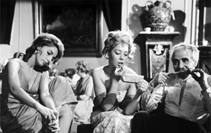
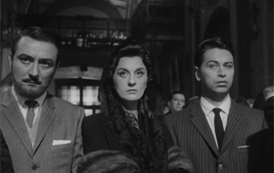
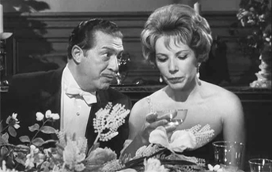
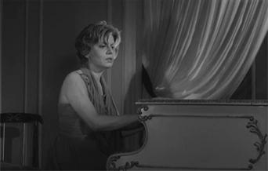
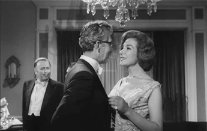
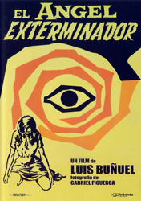
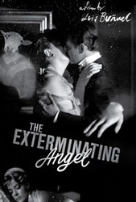
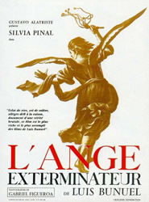
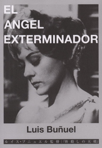
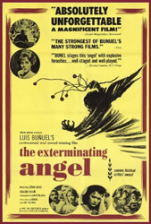

Jacqueline Andere - Alicia de Roc
Silvia Pinal - Leticia "La Valkiria"
Enrique García Álvarez - Alberto Roc
Enrique Rambal - Edmundo Nóbile
Lucy Gallardo - Lucía Nóbile
Xavier Loyá - Francisco Avila


José Baviera - Leandro Gomez
Nadia Haro Oliva - Ana Maynar
Patricia de Morelos - Blanca


Tito Junco - Raúl
Augusto Benedico - Dr Carlos Conde
Bertha Moss - Leonora
Colonel Alvaro
Eduardo
During a formal dinner party at the lavish mansion of Señor Edmundo Nóbile and his wife Lucía, the servants unaccountably leave their posts until only the Major-Domo is left. After dinner the guests adjourn to the music room, where one of the women, Blanca, plays a piano sonata. Later, when they might normally be expected to return home, the guests curiously remove their jackets, loosen their gowns, and settle down for the night on couches, chairs and the floor.
By morning it is apparent that, for some inexplicable reason, they are unable to leave. The guests consume what little drinks and food are left from the previous night's party. Days pass, and their plight intensifies; they become thirsty, hungry, quarrelsome, hostile, and hysterical. Only Dr Carlos Conde, applying logic and reason, manages to keep his composure and guide the guests through the ordeal. One guest, the elderly Sergio Russell, dies, and his body is placed in a large cupboard. Later, Béatriz and Eduardo, a young engaged couple, lock themselves in a closet and commit suicide.
The guests eventually manage to break a wall open enough to access a water pipe. In the end, several sheep and a bear break loose from their bonds and find their way to the room; the guests take in the sheep and proceed to slaughter and roast them on fires made from floorboards and broken furniture. Dr Conde tells Nóbile that one of his patients, Leonora, is dying of cancer and accepts a secret supply of morphine from his host to keep her pain under control, but the supply is later stolen by siblings Francis and Juana. Ana, who is Jewish and a practitioner of Kabbalah, tries to free the guests by performing a mystical ceremony, which fails.
Eventually, Raúl suggests that Nóbile is responsible for their predicament and that he must be sacrificed. Only Dr Conde and the noble Colonel Alvaro oppose the angry mob claiming Nóbile's blood. As Nóbile offers to take his own life, a young foreign guest, Leticia (nicknamed "La Valkiria") notices that they are all seated in the same positions as when their plight began. Upon her encouragement, the group starts reconstructing their conversation and movements from the night of the party and discover that they are then free to leave the room. Outside the manor, the guests are greeted by the local police and the servants, who had left the house on the night of the party and who had similarly found themselves unable to enter it.
To give thanks for their salvation, the guests attend a Te Deum at the cathedral. When the service is over, the churchgoers along with the clergy are also trapped. It is not entirely clear whether those that were trapped in the house before are now trapped again. They seem to have disappeared. The situation in the church is followed by a riot on the streets and the military step in to brutally clamp down, firing on the rioters. The last scene shows a flock of sheep entering the church in single file, accompanied by the sound of gunshots.
Though Buñuel never stated what the symbolism represents, leaving it to the viewer's understanding, American film critic Roger Ebert wrote a lengthy interpretation of the film's symbolism, which includes the following paragraph: "The dinner guests represent the ruling class in Franco's Spain. Having set a banquet table for themselves by defeating the workers in the Spanish Civil War, they sit down for a feast, only to find it never ends. They're trapped in their own bourgeois cul-de-sac. Increasingly resentful at being shut off from the world outside, they grow mean and restless; their worst tendencies are revealed."
This 1962 Mexican supernatural surrealist film, starred Silvia Pinal and was produced by her then-husband Gustavo Alatriste. The movie follows a group of wealthy guests finding themselves unable to leave after a lavish dinner party, and the chaos that ensues afterward. Sharply satirical and allegorical, the film contains a view of the aristocracy suggesting they "harbour savage instincts and unspeakable secrets".




